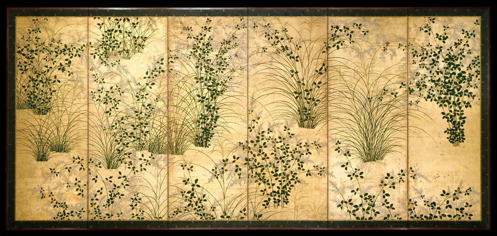

Holding the Wind in Gold
The grasses stand in clusters. The eye never stops moving.

First half of the 17th century · Japan
Ink and color on gilt paper; pair of six-panel screens
Each: 153.2 × 349.4 cm. One screen shown, not the full pair.
Date, medium, dimensions and accession numbers follow the collection record. Formal and emotional readings below are independent analysis. The painter is unidentified; stylistic attribution is not treated as a confirmed signature.
Start at a distance
This is a compelling image for November: abundance poised near the end of a season. Reduce the image and gold arrives first. Move closer and fine arcs begin to pull the empty spaces together. Give it a moment; the quiet surface has considerable momentum.
Composition | Clusters and intervals
Six vertical divisions establish a steady framework. The grasses cross it with outward curves. Their roots sit at different heights, without a single level horizon; the eye follows a blade upward, then drops into another dense cluster. Dark foliage alternates with exposed gold, setting a dense–open–dense rhythm. Those intervals keep a crowded field breathable.
Color | A quiet temperature shift
Gold, yellow-brown and deep green dominate. Gold and brown form a warm analogous range, while yellowish grasses bridge toward green. This is not a forceful complementary clash. Separation comes chiefly from temperature and value: warm ground against cooler-looking leaves, light against dark. Pale gray-violet flowers lower the saturation between darker clusters. These observations concern the digital reproduction, not verified pigment identities or exact original colors.
Light | A continuous field of brightness
Strong cast shadows do not establish a particular hour of sunlight. Ink values, edges and overlaps distinguish the blades. Gold supplies a continuous luminous field, allowing space to feel both shallow and layered. A gilt surface responds to changing viewing conditions, but this frontal photograph records only one appearance. It cannot reproduce the full interaction of folded panels and room light.
Technique and maker | Lines carrying abundance
The collection records a pair of six-panel screens in ink and color on gilt paper, dating to the first half of the seventeenth century. The individual painter is unidentified. The format brings painting into an interior: folds can alter the rhythm of looking. In the image, long grass lines alternate with fuller oval leaves, giving line and small masses different visual speeds. Brush sequence, pigments and construction layers cannot be established from this reproduction alone.
Why it moves me | A narrow foothold
What holds me is the smallness of the roots beneath all that spreading growth. A cluster seems to entrust its weight to a few fine lines, then opens in every direction. Gold lends the moment durability; the delicate blades suggest that everything could move. Abundance and vulnerability occupy the same shape. This is a personal reading, not a documented statement of intent.
Try it | Leave room inside complexity
For a poster or still life, reserve roughly one third as continuous background. Arrange three main clusters low–high–low, linking them with curves rather than distributing them evenly. Try 65% warm paper #F2EBDD, 20% aged gold #C8A45B, 12% deep green #263C2C and 3% gray-violet #AAA2AD. These are editorial practice colors, not measurements of the artwork; flat color cannot reproduce metallic reflection.